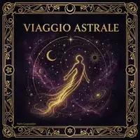

Tocca il pulsante per tracciare 4 righe. Ogni riga sarà attiva (un punto) o passiva (due punti). Le 4 righe insieme formeranno una delle 16 figure geomantiche.
Ogni tocco genera una riga casuale: attiva (punto singolo) o passiva (due punti doppi).
